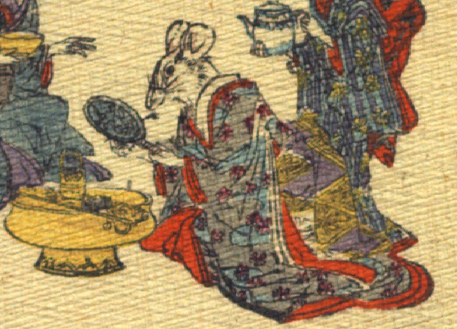

女の鼠。墨色に赤い柄の入った振袖をまとって座っている。右手にお歯黒筆、左手に鏡を持っている。手前に渡しかね、かねわかしを載せた耳盥が置かれている。お歯黒をつけようとしているところである。手は人間のものである。
著作者：J.Dautremer／出典：親書誌：U426_nichibunken_0111：Le mariage de la souris／日付：2006／資源識別子：U426_nichibunken_0111_0006_0002
Copyright (c)2010- International Research Center for Japanese Studies, Kyoto, Japan. All rights reserved.